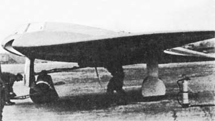
.jpg) Одним из самых нестандартных боевых самолетов, построенных в течении 2-й мировой войны, стал Go.229 - первый турбореактивный самолет - "летающее крыло". Он представлял собой итог более чем десятилетней конструкторской деятельности братьев Реймара и Вальтера Хортенов, главной целью которых было создание самолета с минимальным сопротивлением. В результате Go.229 не имел фюзеляжа как такового. Толщина центроплана была достаточной для размещения в нем пилота и двигателя. Вертикальное оперение отсутствовало. Управление по курсу осуществлялось спойлерами, установленными на крыле.
Одним из самых нестандартных боевых самолетов, построенных в течении 2-й мировой войны, стал Go.229 - первый турбореактивный самолет - "летающее крыло". Он представлял собой итог более чем десятилетней конструкторской деятельности братьев Реймара и Вальтера Хортенов, главной целью которых было создание самолета с минимальным сопротивлением. В результате Go.229 не имел фюзеляжа как такового. Толщина центроплана была достаточной для размещения в нем пилота и двигателя. Вертикальное оперение отсутствовало. Управление по курсу осуществлялось спойлерами, установленными на крыле.
Участие "Готаер вагонфабрик" свелось к подготовке серийного производства с некоторыми соответствующими изменениями в конструкции. Основную же работу провели братья Хортены по собственной инициативе за два года до присоединения к их работам концерна в Готе. В 1942г. майор Вальтер Хортен и его брат обер-лейтенант Реймар были отозваны из строевых частей специально для работы в "зондеркоманде 9", созданной под эгидой люфтваффе исключительно для реализации проекта "летающего крыла".
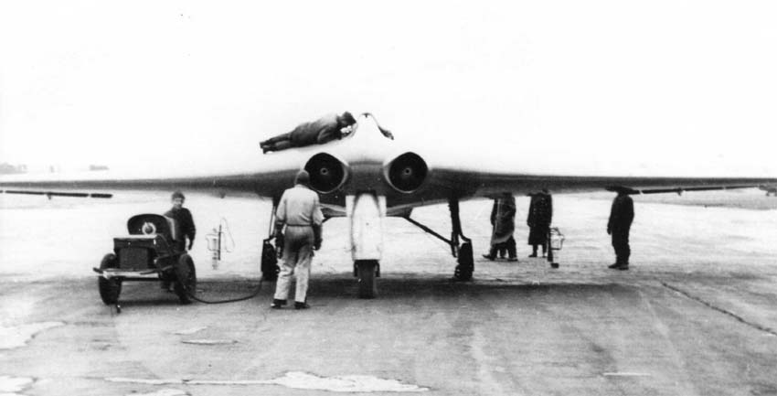
Основная идея заключалась в том, что чистое крыло будет иметь значительно меньшее аэродинамическое сопротивление. Первый планер "Хортен-I" полетел еще в 1931г, когда Вальтеру Хортену только исполнилось 16 лет. Деревянный планер с тканевым покрытием управлялся элевонами и рулевыми тормозами на концах крыла. Опыт, полученный в работе над ним, отразился в создании в 1934г. нового "Хортен-II", имевшего большее удлинение крыла и стреловидную заднюю кромку. Внутренние элевоны использовались как рули высоты, а внешние - как элероны. В течении 1935г. "Хортен" был оснащен 80-сильным двигателем воздушного охлаждения "Хирт" НМ-60R, расположенным внутри крыла и работающим на толкающий винт через удлиненный вал.
Оба брата поступили в люфтваффе в 1936г, но продолжили свою конструкторскую деятельность. В 1936-37 гг были построены три "Хортена-II", участвовавшие в состязаниях в Роне в 1937г. В 1938г. Хортены ушли из люфтваффе и построили еще ряд самолетов. Первый из них "Хортен-III" послужил образцом для всех последующих машин братьев. Центропланная секция была сварена из стальных труб, однолонжеронное крыло - деревянное. Два "Хортена-III" участвовали в 1938г. в соревнованиях в Роне, достигнув хороших результатов. Правда, оба самолета были оставлены своими пилотами с парашютами из-за сильного обледенения.
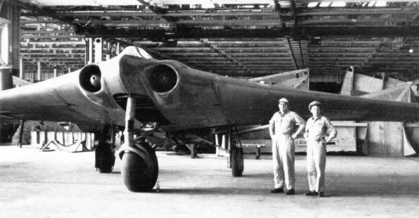
К этому времени работы братьев получили заметную официальную и неофициальную известность. В 1939 ими интересовался Эрнст Хейнкель, но переговоры зашли в тупик из-за его желания зарегистрировать все последующие патенты на свое имя. Еще одни переговоры прошли с Вилли Мессершмиттом, но опять же безрезультатно. После недолгой работы в Техническом университете Бонна братья вернулись в люфтваффе. Однако, участие в политической жизни Вальтера Хортена вместе с дружбой с Эрнстом Удетом (Реймар Хортен был женат на секретарше Удета) позволили братьям продолжить конструкторскую деятельность. Действенное участие министерства авиации и создание "зондеркоманды-9" на базе ремонтного завода в Геттингене помогло им. Кроме того, братья могли использовать фурнитурную фабрику "Пешке" для вспомогательных работ.К моменту передачи завода братья спроектировали и построили планер Но-IV, в котором пилот располагался лежа. Удлинение крыла было 21.66 вместо 10.66 на Но-III.
Первым спроектированным с самого начала самолетом Хортенов стал двухместный Ho-V с двумя 80-сильными моторами "Хирт" НМ-60R. Двигатели располагались в крыле и приводили толкающие винты через удлиненные валы. Братья довольно быстро осознали перспективы сочетания прекрасной аэродинамики летающего крыла с турбореактивным двигателем. Однако они понимали, что несмотря на хорошие связи в РЛМ, консерватизм последнего пересилит. К счастью, разведка добыла сведения, что подобные работы проводятся в США на фирме "Нортроп". Это подхлестнуло РЛМ в финансировании работ "зондеркоманды 9", предоставив ей особый статус, выводящий из-под непосредственного руководства Технического департамента.
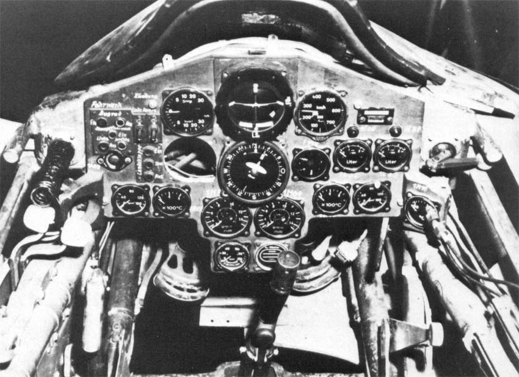
Перед проработкой проекта реактивного истребителя "летающее крыло" Хортены создали двухместный учебный Но-VII, главной задачей которого было обучение пилотов на самолете столь необычной схемы. Одновременно самолет должен был послужить для проверки проработок по реактивному истребителю. В результете Но-VII официально предназначался на роль опытного самолета для аэродинамических исследований и в качестве связного.
Контракт на 20 Но-VII был передан на завод "Пешке" в Миндене. В целом похожий по конфигурации на Но-V, новый самолет был оснащен двумя двигателями "Аргус" Аs-10С мощностью 240л.с, и имел убираемое четырехстоечное шасси. Два передних колеса на отдельных стойках крепились у самой линии симметрии и убирались назад. Две задние стойки под валами двигателей убирались вперед с поворотом на 90°.
Первый Но-VII был изготовлен и облетан в Миндене летом 1943г, но к моменту готовности второго самолета спустя несколько месяцев РЛМ потеряло интерес к "летающему крылу". Оставшиеся 18 Но-VII так и не были закончены. Несмотря на утрату интереса со стороны официальных лиц, Хортены продолжили работу над реактивным истребителем, который они назвали Но-IX - его сборка уже началась в Геттингене. Сначала для проведения аэродинамических исследований был построен безмоторный Но-IX-V1 c неубираемым трехстоечным шасси. РЛМ узнало о существовании опытного самолета только в начале 1944г, когда тот был уже наполовину закончен. Хотя такая "приватная" инициатива строго пресекалась министерством, братья получили поддержку. Необычная компоновка самолета захватила воображение Геринга, который оказал проекту персональную поддержку и потребовал начать летные испытания в моторном варианте в кратчайший срок.
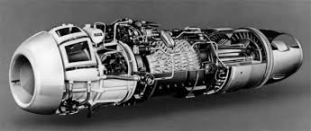
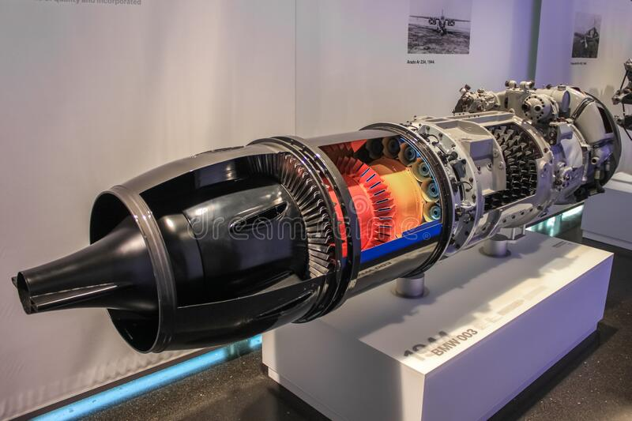
Но-IX-V2 был спроектирован из расчета на перегрузку 7, что с запасом прочности 1.8 давало разрушающую перегрузку 12.6. Крыло относительной толщиной 14% в корне и 8% на концах с симметричным профилем. Центропланная секция имела S-образный профиль. В ней размещались пилот, двигатели и стойки шасси. Центроплан сварной из стальных труб с фанерной обшивкой (за исключением района выхлопных сопел моторов, обшитого стальным листом). Консоли цельнодеревянной конструкции с металлическими законцовками. Передняя кромка выполнялась из так называемого литого дерева, представлявшего собой прессованый с резиной опилки. Остальная поверхность крыла обшивалась фанерой. Специальный лак придавал ей высокую чистоту. Крыло с одним основным лонжероном и одним вспомогательным, к которому крепились рулевые поверхности. Протектированные мягкие баки общим объемом в 3000л занимали две трети объема консоли. Баков в каждом крыле было четыре - по два за и перед лонжероном. 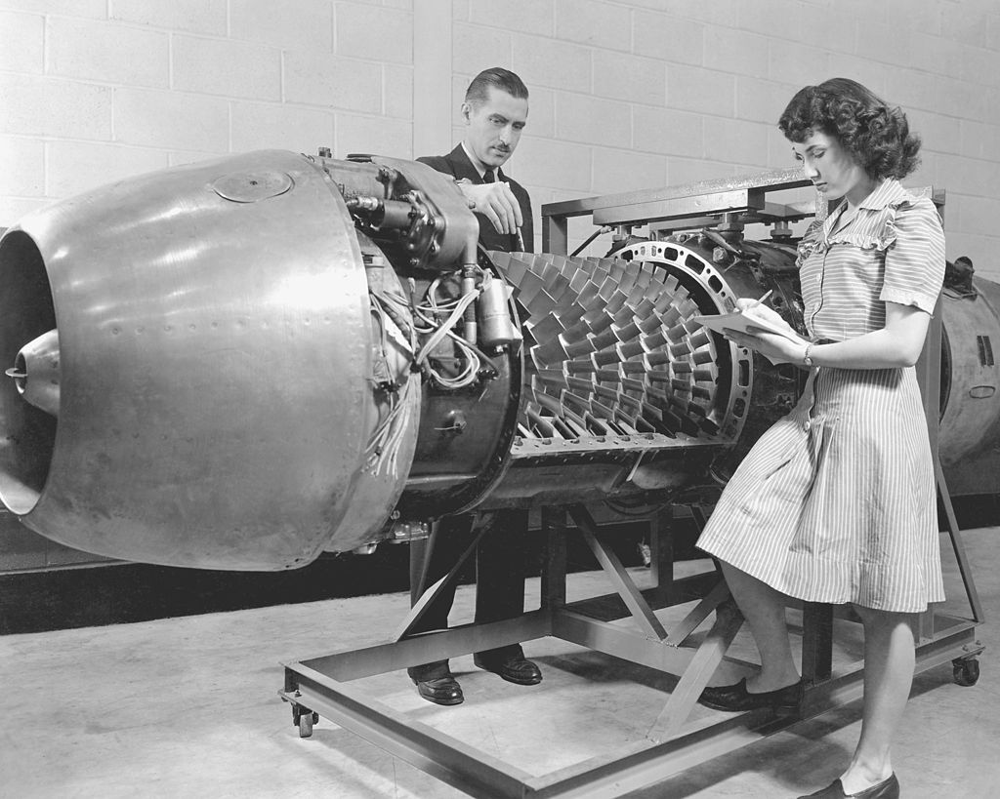
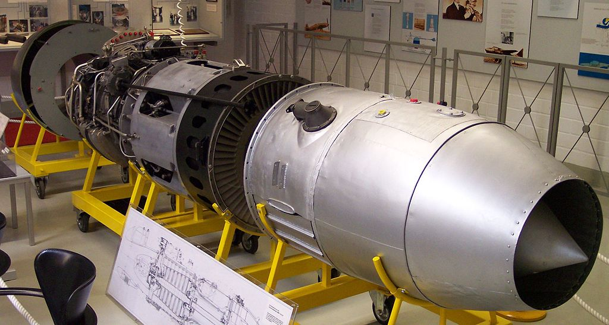
Два ТРД Jumo-004В монтировались близко к линии симметрии. Они проходили через главный лонжерон и их воздухозаборники заметно снижали относительную толщину центроплана. Выступами на поверхности крыла были только обтекатели двигателей, которые не удалось вписать в контур, и приземистый фонарь кабины пилота. Шасси трехстоечное; носовое колесо убиралось назад, основные стойки - к линии симметрии. Первоначально планировалось использовать четырехстоечное шасси по образцу Но-VII, но потом предпочтение было отдано одной высокопрочной носовой стойке, воспринимающей до 45% нагрузки на шасси. Для сокращения пробега был предусмотрен тормозной парашют. Продольная и поперечная управляемость обеспечивалась элевонами, которые вместе с закрылками занимали всю заднюю кромку крыла. Закрылки были связаны со спойлерами, расположенными сразу за стойками шасси. Управление по курсу осуществлялось спойлерами на консолях сразу за главным лонжероном. При этом использовалась пара спойлеров разной длины на верхней и нижней поверхности крыла. Подпружиненная проводка производила сначала выпуск малого спойлера, а потом, когда он выпускался полностью, большого. Таким образом обеспечивалось нормальное управление самолета на малых и больших скоростях.
Пока шла сборка Но-IX-V2, в Ораниенберге под Берлином проходили испытания безмотороного V1, давшие хорошие результаты. Но однажды пилот забыл убрать находящийся в потоке вентилятор генератора, и последующая авария при посадке задержала испытания. Однако, уже проведенные были достаточными, чтобы изучить характеристики самолета и начать серийное производство. На этой стадии работ и подключилась "Готаер вагонфабрик", получившая задание довести конструкцию до серийного производства. Дальнейшие работы по самолету были переданы конструкторскому бюро ГВФ. РЛМ присвоило машине обозначение Go.229, и в начале лета 1944г. был выдан контракт на семь опытных и 20 предсерийных самолетов.
Конструктора "Готы" практически не изменили конструкции, но переделали кабину, оснастив ее простейшим катапультируемым сиденьем. Обтекатели двигателей были увеличены. Была введена система обдува холодным воздухом обшивки в районе сопел двигателей. Довольно сильно изменили шасси, рассчитанное на больший взлетный вес.
Предусматривалась установка четырех пушек МК-103 или МК-108 рядом с двигателями. Под центроплан можно было подвесить две 1000кг бомбы или два 1250л бака. Была спроектирована и двухместная всепогодная версия Go.229b под локатор сантиметрового диапазона FuG-244 "Бремен" в удлиненном носовом обтекателе. Второй и третий самолеты постройки ГВФ - V4 и V5 были прототипами этой серии.
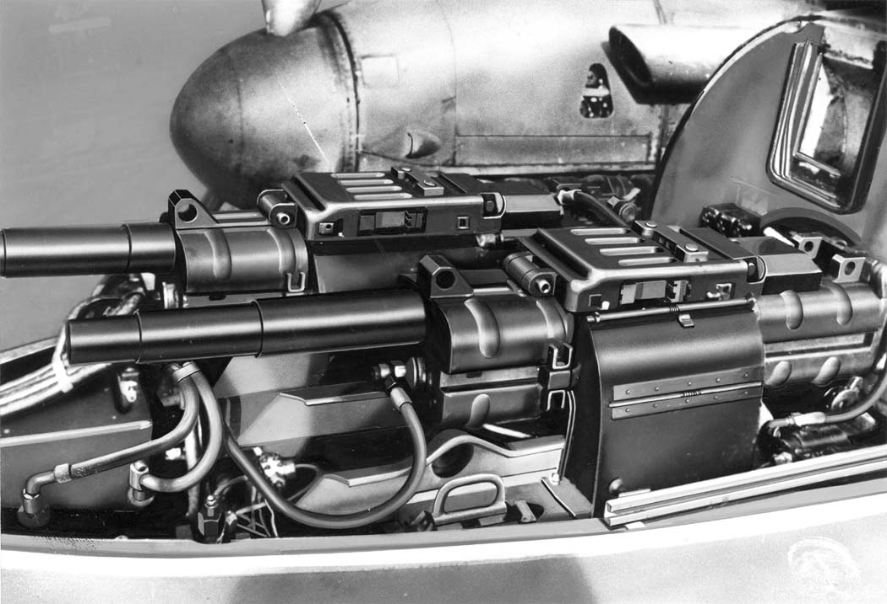
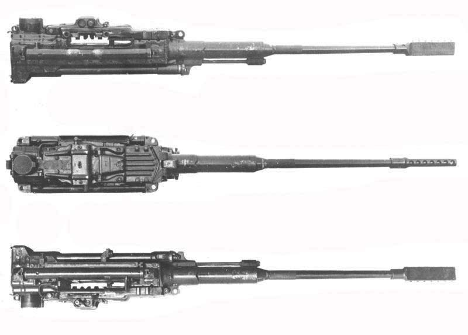
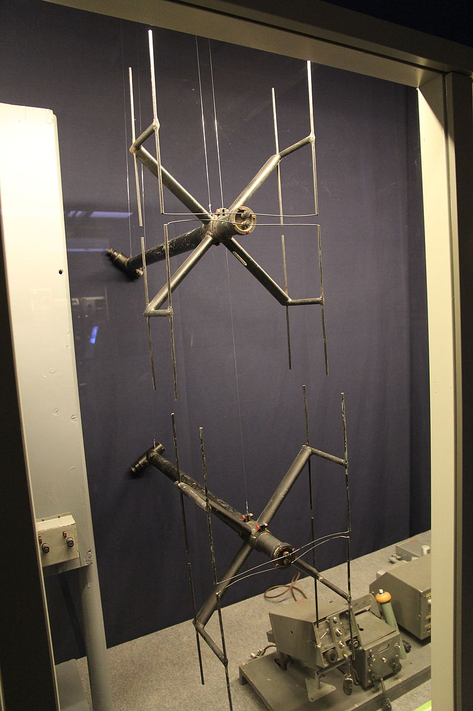
Пока на ГВФ разворачивалось серийное производство, в Геттингене в январе 1945г. был закончен Но-IХ-V2, перевезенный в Ораниенберг для летных испытаний. На первые полеты носовая стойка шасси была заблокирована в выпущенном положении. При нормальном взлетном весе и опущенных на 10° закрылках скорость отрыва была 150км/ч при разбеге в 500 м. С выпущенным носовым колесом скорость достигала 300 км/ч. Управляемость оправдала самые оптимистичные предположения. В марте носовое колесо стали убирать в полете. Была достигнута скорость 795км/ч, но во время посадки правый двигатель заглох. Пилот лейтенант Циллер катапультировался, самолет перевернулся, упал на землю и сгорел. Всего опытный самолет налетал два часа.
Сборка следующего опытного самолета в Фридрихсроде уже заканчивалась. Go.229-VЗ должен был стать первым прототипом серийного Go.229a. V4 и V5 были прототипами Go.229b - двухместного всепогодного истребителя. V6 был вторым опытным самолетом серии А с пушками МК-103 вместо МК-108. V7 должен был стать учебным двухместным вариантом. 12 марта 1945г. на совещании у Геринга Go.229 был включен в "срочную истребительную программу", но через два месяца американцы захватили завод в Фридрихсроде. VЗ был уже подготовлен для испытаний, V4 и V6 были почти готовы, были готовы и узлы для 20 предсерийных Go.229a-0.
Альтернативный вариант поиска инфы по конкретным зонам планера